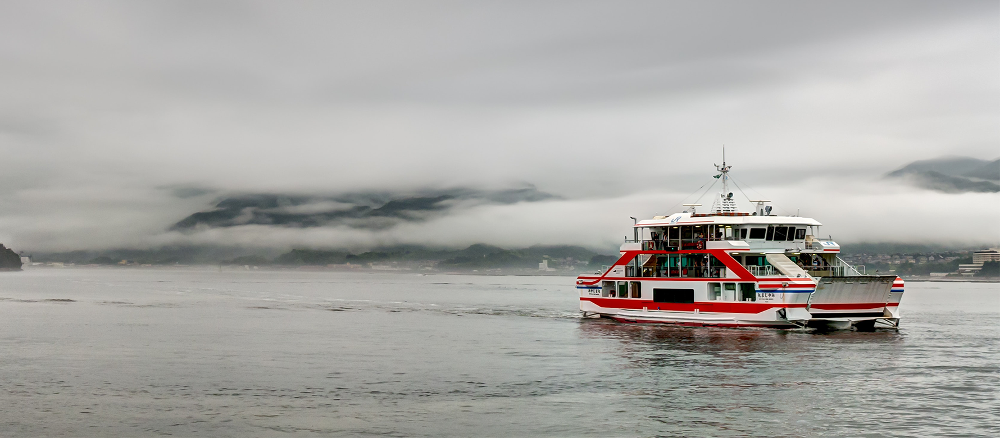

It’s important to consider what form of transportation to take in order to reach
Japan. The only ways to reach Japan are through the air planes or boats. One of
the more common ways to cross would be via ferries because they are common,
relaxing and inexpensive.

Once in Japan, transportation is also needed to get around the country.
While the best method of traveling heavily depends on how much time
you have there are some generally better ones. One of these would be trains.
Trains can be expensive but you can order a Japan Rail Pass, decreasing the
price of the tickets. To decrease the price further limited express and regional
trains can be taken although they are much slower. Public buses are another way to
travel. They are even cheaper but much slower and should be used for closer destinations.